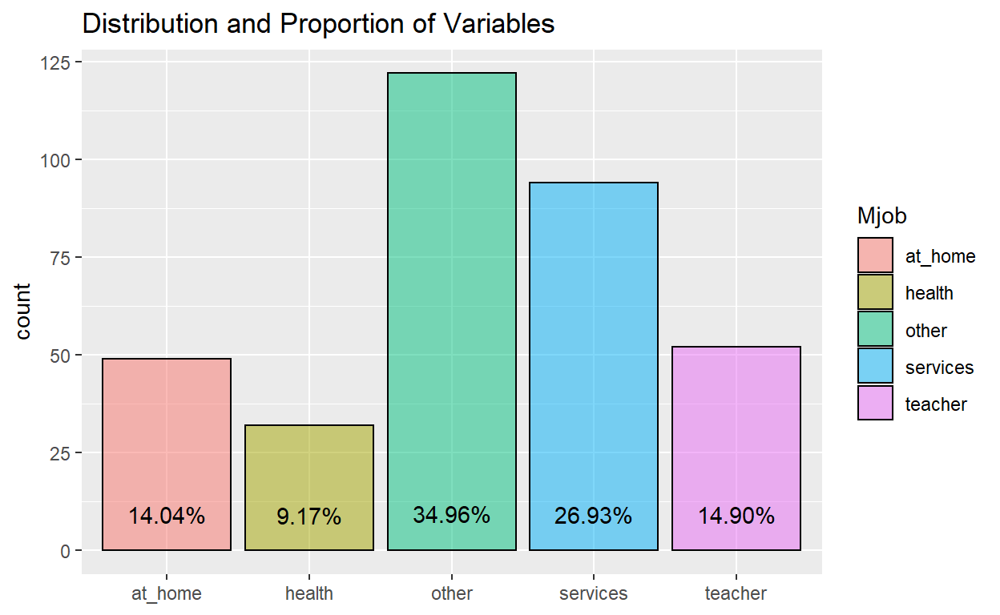
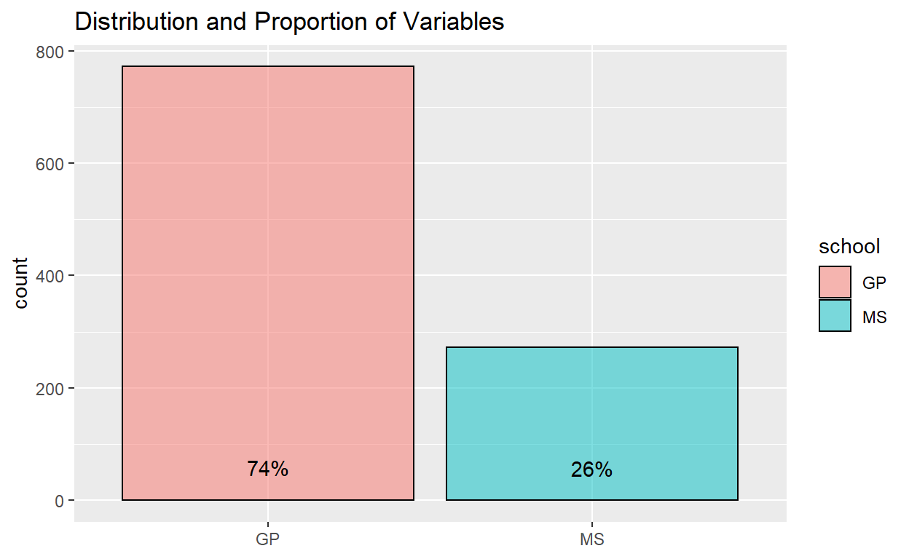
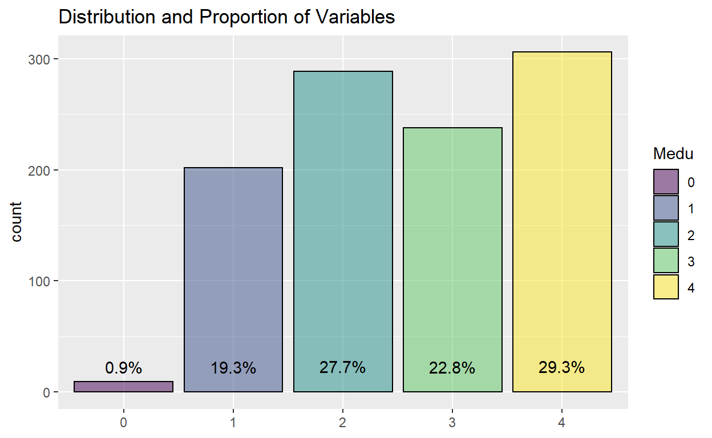
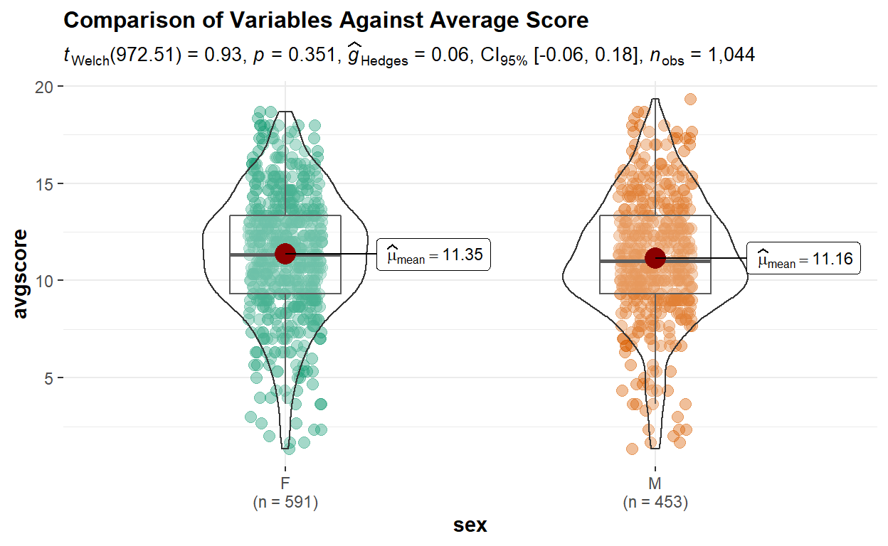

1. Introduction
Many factors can impact a persons academic performance, family background and ones lifestyle are two of the larger factors. The influence of family background may include financial status in the familys ability to provide educational support, stability at home to provide emotional and mental support, among others. On the other hand, ones lifestyle choices such as what he or she chooses to do during their free time, amount of time they spend on studying may have impact on ones grades.
Since there are many sub-factors in family background and lifestyle choices, the motivation of this study is hence to look deeper at these sub-factors to see which are the factors that have a greater correlation in the impact on a students grades. More specifically, this study aims to study the correlation between each factor and a students grades, as well as aiming to build a model that can accurately determine the academic performance of a student. From the findings, targeted help may be administered to students in these specific areas attributing to poor grades in school, therein helping them have a higher chance of a better future.
Here, exploratory data analysis for the data set will be discussed and performed, which will be part of a module in a full Shiny-based Visual Analytics Application project.
2. Literature Review
Based on literature review on exploratory analysis performed for similar data sets involving education/grades, most provide a time-based analysis on grades where trends of variables are observed over time. Asides from that, a few provided simple bar charts to compare the target variable against others in different aspects. For example, a comparison of proportion between blacks and other minority groups in having various education certificates.
insert charts
The third chart is most similar to what will be attempted in this report, to explore proportions of the different variables and more. Due to the large number of variables in this study, it would make sense to include interactivity to allow the user to select variables for further analysis, rather than to generate more than twenty plots at one go. Also, they do not provide statistical comparisons between inputs for each variable. Another improvement would be the inclusion of number of data points and providing a visualization of boxplots, to better visualize the basic statistics of the variables.
3. Data Extraction and Preparation
3.1 Install/Load R Packages
A list of packages are required for this protyping report. This code chunk installs the required packages for testing and loads them onto RStudio environment.
3.2 Data Preparation and Cleaning
The data set used in this report is from Kaggle, which contains two csv files, student-mat.csv and student-por.csv. The data was obtained from a survey of Portuguese students aged 15 to 22 from mathematics and Portuguese language course. The data was obtained through a survey on family demographics, lifestyle factors, along with their grades in mathematics and Portuguese language. The data set contains other variables that can be broadly classified into family demographics and lifestyle factors.
metadata <- read_xlsx("data/data_metadata.xlsx", sheet = 1)
metadata
# A tibble: 33 x 3
`Variable Name` Description Details
<chr> <chr> <chr>
1 school Student's school "'GP' - Gabriel Pereira\r\n'MS~
2 sex Student's sex "'F' - female\r\n'M' - male"
3 age Student's age "from 15 to 22"
4 address Student's home add~ "'U' - urban\r\n'R' - rural"
5 famsize Family size "'LE3' - less or equal to 3\r\~
6 Pstatus Parent's cohabitat~ "'T' - living together\r\n'A' ~
7 Medu Mother's education "0 - none\r\n1 - primary educa~
8 Fedu Father's education "0 - none\r\n1 - primary educa~
9 Mjob Mother's job "teacher' - teacher\r\n'health~
10 Fjob Father's job "teacher' - teacher\r\n'health~
# ... with 23 more rowsFirst, both csv files were imported by using the following code chunk utilizing read_csv(). Subsequently, a check was done to see if there were any null values. Given a FALSE output, we can proceed without having to deal with any null inputs.
[1] FALSESince some further manipulation will be done on the data along the way, data_cleaned was created to perform these manipulations while retaining the raw data available in data_all in case it is needed. Reviewing the data, we know that there are some variables that should be ordinal data, such as Dalc which is the workday alcohol consumption, with inputs ranging from 0 to 4 representing very low intake to very high intakes. Hence, another step to change these data to ordinal data along with the order was performed.
# Duplicate data for further manipulation
data_cleaned <- data_all
# Setting ordinal data levels
data_cleaned$Medu <- factor(data_cleaned$Medu, order = TRUE,
levels = c("0", "1", "2", "3", "4"))
data_cleaned$Fedu <- factor(data_cleaned$Fedu, order = TRUE,
levels = c("0", "1", "2", "3", "4"))
data_cleaned$failures <- factor(data_cleaned$failures, order = TRUE,
levels = c("0", "1", "2", "3"))
data_cleaned$famrel <- factor(data_cleaned$Medu, order = TRUE,
levels = c("1", "2", "3", "4", "5"))
data_cleaned$freetime <- factor(data_cleaned$freetime, order = TRUE,
levels = c("1", "2", "3", "4", "5"))
data_cleaned$goout <- factor(data_cleaned$goout, order = TRUE,
levels = c("1", "2", "3", "4", "5"))
data_cleaned$Dalc <- factor(data_cleaned$Dalc, order = TRUE,
levels = c("1", "2", "3", "4", "5"))
data_cleaned$Walc <- factor(data_cleaned$Walc, order = TRUE,
levels = c("1", "2", "3", "4", "5"))
data_cleaned$health <- factor(data_cleaned$health, order = TRUE,
levels = c("1", "2", "3", "4", "5"))
3.3 Initial Data Analysis
As the grades in this data set involves students from two different schools and two different subjects, we will need to find out if the results for each of them are statistically different from the other. Also, since 3 grades are given, G1, G2 and G3, representing results from the first period, second period, and the final grade, we also want to find out if there is any statistically significant difference between the results. For the analysis, ANOVA technique will be used and a new data set with the required variables - school, G1, G2, G3 and subject will be used.
Further data manipulation was done to firstly create a new data set with the required variables, then creating a new data perform pivoting for the grades.
Difference in Grades
The data set provides results through 3 variables (G1, G2, G3) while the goal would be to have a single target grade variable for further analysis, which will make sense if the three variables are not statistically different. For the comparison between grades, one way ANOVA will be used. As all the p-values generated are more than 0.05 for a 95% confidence level, we can say that the variables are not statistically different from each other. Hence, in order to have a single target grade, the average of the three variables will be used and named avgscore.
# Performing one-way ANOVA analysis
anova_grades <- aov(Score~G, data = anova_data_pivot)
anova(anova_grades)
Analysis of Variance Table
Response: Score
Df Sum Sq Mean Sq F value Pr(>F)
G 2 9 4.6475 0.4026 0.6686
Residuals 3129 36118 11.5430 Difference in School and Subject
Since there are two variables that we would like to analyze, a two-way ANOVA test was performed and showed that results for both schools and both subjects are significantly different.
# Performing two-way ANOVA analysis
anova_twoway <- aov(Score~subject * school, data = anova_data_pivot)
anova(anova_twoway)
Analysis of Variance Table
Response: Score
Df Sum Sq Mean Sq F value Pr(>F)
subject 1 659 658.88 60.475 1.004e-14 ***
school 1 1238 1238.19 113.647 < 2.2e-16 ***
subject:school 1 151 150.54 13.817 0.000205 ***
Residuals 3128 34080 10.90
---
Signif. codes: 0 '***' 0.001 '**' 0.01 '*' 0.05 '.' 0.1 ' ' 1Since the grades are significantly different between schools and between grades, they will be analyzed separately in this report with the following four combinations:
Gabriel Pereira + Math
Gabriel Pereira + Portugese
Mousinho da Silveira + Math
Mousinho da Silveira + Portugese
# Split by school
data_GP <- subset(data_cleaned, school == "GP")
data_MS <- subset(data_cleaned, school == "MS")
# Then split by subject
data_GP_math <- subset(data_GP, subject == "math")
data_GP_por <- subset(data_GP, subject == "por")
data_MS_math <- subset(data_MS, subject == "math")
data_MS_por <- subset(data_MS, subject == "por")
# Remove school and subject variable
data_GP_math = subset(data_GP_math, select = -c(subject, school))
data_GP_por = subset(data_GP_por, select = -c(subject, school))
data_MS_math = subset(data_MS_math, select = -c(subject, school))
data_MS_por = subset(data_MS_por, select = -c(subject, school))
4. Exploratory and Confirmatory Data Analysis
For EDA and CDA, there will be three sections to be worked on. First, will be a section to view the distribution of each variable, allowing the user to have a quick overview of each variable in terms of the proportions and distribution. Next, a section to compare the average results by different inputs in a variable. This will allow the user to compare the differences in average grades for each input, for example comparing the grades between students who have a family size of more than or less than 3. Lastly, a section to plot out the correlation between all the variables, including the average grade. This will allow the user to see the correlation strength between each variable, and each variable with the average grade. Further details for each section will be documented below.
4.1 Section 1: Distributions and Proportions
For the initial exploratory analysis, we want to look at the distributions and proportions of the given data. While most of the variables can be visualized using a basic bar chart, some of the variables such as average score would be better visualized using a histogram due to the variable having a larger range of inputs.
Here, ggplot2 package was used as the main package as it allows for basic editing of the chart such as the titles or colour schemes of the chart and below shows an example of each of the three charts.
Chart 1 (Bar Chart):
The code chunk here using ggplot will plot a bar chart to visualize the distribution and proportions of variables. The proportion percentage of each input will be calculated and reflected on the chart itself for the user to readily have exact data on the proportions. This was made more obvious by adding transparency to the bar chart.
The chart will include an option for the user to have two inputs. First, to select which of the data sets he or she would like to view - the four data sets split by school and subject, or the combined data. Second, the variable to study. For ordinal data, with the same code ggplot automatically colours them by gradient, with the lower levels being darker.
Example of proportion of students in the two schools for the combined data set:
ggplot(data_cleaned) +
aes(x = school, fill = school) +
geom_bar(aes(x = school, fill = school), color = "black", alpha = 0.5) +
geom_text(aes(label = scales::percent(..prop..), group = 1, y= ..prop.. ), stat= "count", vjust = -1.5) +
ggtitle("Distribution and Proportion of Variables") +
theme(axis.title.x = element_blank())

Example of proportion of students with indicated mothers job for the students in the Gabriel Pereira school taking math:
ggplot(data_GP_math) +
aes(x = Mjob, fill = Mjob) +
geom_bar(aes(x = Mjob, fill = Mjob), color = "black", alpha = 0.5) +
geom_text(aes(label = scales::percent(..prop..), group = 1, y= ..prop.. ), stat= "count", vjust = -1.5) +
ggtitle("Distribution and Proportion of Variables") +
theme(axis.title.x = element_blank())

Example of ordinal data, mothers education level of students in the whole data set:
ggplot(data_cleaned) +
aes(x = Medu, fill = Medu) +
geom_bar(aes(x = Medu, fill = Medu), color = "black", alpha = 0.5) +
geom_text(aes(label = scales::percent(..prop..), group = 1, y= ..prop.. ), stat= "count", vjust = -1.5) +
ggtitle("Distribution and Proportion of Variables") +
theme(axis.title.x = element_blank())

Chart 2 (Histogram):
The histogram chart includes a fill colour to avoid using black, and has a starting fixed bin width of 1. However, this input of the bin number will be an available input for the user to change. Furthermore, the plot will be presented using ggplotly package to allow the user to see the detail by hovering over each bar since the range of data could be very wide, for instance the number of absences which ranges from 0 to 75. Here, the user is able to input the data set as well as the variable he or she wishes to view as well.
Example of number of absences for students in Gabriel Pereira school taking math:
histo <- ggplot(data_GP_math) +
aes(x = absences) +
geom_histogram(binwidth=1, color="black", fill="light blue") +
ggtitle("Distribution and Proportion of Variables") +
theme(axis.title.x = element_blank())
ggplotly(histo)
Example of distribution of average scores for students in the whole data set:
histo <- ggplot(data_cleaned) +
aes(x = avgscore) +
geom_histogram(binwidth=1, color="black", fill="light blue") +
ggtitle("Distribution and Proportion of Variables") +
theme(axis.title.x = element_blank())
ggplotly(histo)
4.2 Section 2: Comparison of Results
This section looks at the difference in average grades between individual inputs in each variable.
The ggplot2 package was first considered, and instead of just using a boxplot with jitters, a violin plot was used. This is because of the many data points which will cause the chart to look messy with the jittering, while the violin plot is able to show the distribution of data in a clean way. A statistical comparison between means was also implemented where the p-value would be indicated in the chart.
However, testing out the plot generated by ggbetweenstats was found to be a better option due to several reasons. Aesthetically it provides a chart with better design, as well as automatically providing more information such as number of variable input size and the mean for each input. It also is able to produce a violin and boxplot to visualize the interquartile range and distribution of data points.
As the grades for the subjects and schools have been shown to be significantly different, similar to Section 1, on top of a user input for the variable to study, a user input will be given for the selection of viewing data for different combinations of subjects and schools. The user will also be able to select the type of statistical test to be performed to compare the results within each variable.
Example of chart using ggplot:
# Attempt using ggplot
p <- ggplot(data_MS_math, aes(x = sex, y = avgscore, color=sex)) +
geom_violin(position=position_dodge(1)) +
geom_boxplot(color = "black", alpha=0.5)
p + stat_compare_means(label = "p.format", method = "t.test")

Example of chart using ggbetweenstats:
# Attempt using ggbetweenstats
ggbetweenstats(
data = data_cleaned,
x = sex,
y = avgscore,
pairwise.display = all,
results.subtitle = TRUE,
bf.message = FALSE,
type = "p",
title = "Comparison of Variables Against Average Score")

4.3 Section 3: Correlation
In this section, correlation charts will be generated to compare the correlation between variables as well as to the target - average grade. Before plotting, dummy variables were created for the categorical variables. Subsequently, G1, G2 and G3 were removed since we are only interested in the average grade here. Since Medu and Fedu are categorical data in numerical form, the model.matrix did not capture this variable to create dummy variables. Hence, they were separately created.
# Creating dummy variables for categorical and non-numerical data
data_for_corr_all <- data_all
data_for_corr <- model.matrix(~0+., data=data_for_corr_all)
data_for_corr <- as.data.frame(data_for_corr)
data_for_corr = subset(data_for_corr, select = -c(G1, G2, G3))
data_for_corr <- fastDummies::dummy_cols(data_for_corr, select_columns = "Medu")
data_for_corr <- fastDummies::dummy_cols(data_for_corr, select_columns = "Fedu")
data_for_corr = subset(data_for_corr, select = -c(Medu, Fedu))
data_for_corr$avgscore <- ((data_all$G1 + data_all$G2 + data_all$G3)/3)
# Resplitting by school and subject
data_cor_GP <- subset(data_for_corr, schoolGP == "1")
data_cor_MS <- subset(data_for_corr, schoolMS == "1")
data_cor_GP_math <- subset(data_cor_GP, subjectpor == "0")
data_cor_GP_por <- subset(data_cor_GP, subjectpor == "1")
data_cor_MS_math <- subset(data_cor_MS, subjectpor == "0")
data_cor_MS_por <- subset(data_cor_MS, subjectpor == "1")
data_cor_GP_math = subset(data_cor_GP_math, select = -c(subjectpor, schoolGP, schoolMS))
data_cor_GP_por = subset(data_cor_GP_por, select = -c(subjectpor, schoolGP, schoolMS))
data_cor_MS_math = subset(data_cor_MS_math, select = -c(subjectpor, schoolGP, schoolMS))
data_cor_MS_por = subset(data_cor_MS_por, select = -c(subjectpor, schoolGP, schoolMS))
In this section, the user will first be allowed to choose to view a static plot or interactive plot. The static plot uses an ellipse method, where based on the shade of colour and the direction of the ellipse, the correlation is clear between variables. This gives a general overview of the data and the respective correlations strengths.
On the other hand, an interactive plot can be used should the user want to review the correlation in detail. Here, the user will be able to see the correlations value along with the two associated variables by hovering the cursor over the specific square. With the colours based on correlation, the user is also able to have a rough overview of the correlations as well.
Static Plot
data.cor = cor(data_cor_GP_math)
static_corr <- corrplot(data.cor,
method = "ellipse",
type="lower",
diag = FALSE,
tl.col = "black",
tl.cex=0.7)
static_corr
sexM age addressU famsizeLE3
sexM 1.000000000 -0.049906550 -0.030347678 0.0878900661
age -0.049906550 1.000000000 -0.049953945 0.0127170875
addressU -0.030347678 -0.049953945 1.000000000 0.0583709363
famsizeLE3 0.087890066 0.012717088 0.058370936 1.0000000000
PstatusT 0.019791544 0.021326901 -0.020558715 -0.1322041055
Mjobhealth -0.024267520 -0.079174763 0.071674697 0.0245130046
Mjobother -0.012377189 0.011763362 0.015981667 -0.0255973642
Mjobservices 0.003742896 0.010526652 0.033057456 0.0270182735
Mjobteacher 0.197644959 -0.053766640 0.029014305 0.0637168960
Fjobhealth -0.066451942 -0.089437303 0.042080699 0.0288365206
Fjobother 0.032071703 0.032265436 -0.024306443 0.0583206347
Fjobservices 0.003134290 0.005475881 0.010271221 -0.0663458977
Fjobteacher 0.046334616 -0.062504193 -0.003515520 -0.0599536291
reasonhome 0.030473021 0.036181948 0.160646184 0.0250806669
reasonother 0.003384335 -0.027192233 0.052253410 -0.0360133356
reasonreputation -0.095989707 0.035737661 -0.114487686 0.0029184126
guardianmother 0.005858795 -0.091609012 -0.094042041 0.0266462315
guardianother -0.095415173 0.372234544 0.048044785 -0.0298723711
traveltime 0.067096615 -0.019128826 -0.253159709 0.0718265687
studytime -0.293114056 0.037500711 -0.079059560 -0.0760410055
failures 0.017238767 0.190119193 -0.060572884 -0.0074221508
schoolsupyes -0.150371021 -0.224318893 -0.016739144 -0.0212718126
famsupyes -0.162079093 -0.087629044 -0.024308622 -0.0834809689
paidyes -0.133265397 -0.023466668 0.060719904 0.0032352264
activitiesyes 0.126519344 -0.044778818 -0.083658056 0.0202695988
nurseryyes 0.027214857 -0.054255795 -0.001788540 0.1075354984
higheryes -0.130975792 -0.242522037 0.032228238 0.0512527121
internetyes 0.044044217 -0.052210387 0.222043360 0.0081318817
romanticyes -0.082740111 0.181820243 -0.025501357 0.0217767683
famrel 0.070124337 0.044084668 0.055292771 -0.0007985514
freetime 0.226598484 -0.006408522 0.121626758 0.0345533791
goout 0.058597374 0.163384884 0.086653440 0.0294414935
Dalc 0.236235403 0.072042856 -0.026261441 0.0964551317
Walc 0.244769805 0.096697510 -0.048903257 0.1063122506
health 0.142937183 -0.079982890 -0.047033223 -0.0271725580
absences -0.084922241 0.237633059 -0.041289150 0.0601500884
Medu_0 -0.026534322 0.062225224 0.043702858 0.0115144495
Medu_1 -0.052497924 0.036951182 -0.032475667 0.0653961602
Medu_2 -0.072746395 0.041920853 -0.061235034 -0.0097677592
Medu_3 0.001892905 0.065767923 -0.087745194 -0.0362109201
Medu_4 0.107778133 -0.136942609 0.151539521 -0.0047458129
Fedu_0 0.079711643 -0.063834582 0.035631780 -0.0471016214
Fedu_1 -0.100052165 0.156058335 -0.073872128 0.0223819017
Fedu_2 0.012687525 -0.024373952 -0.006645825 0.0753405816
Fedu_3 0.015633010 0.011138080 0.055284767 -0.0294508647
Fedu_4 0.047996933 -0.116508693 0.012138682 -0.0618100198
avgscore 0.118907157 -0.119571333 0.073155232 0.0530868312
PstatusT Mjobhealth Mjobother
sexM 0.019791544 -0.0242675196 -0.012377189
age 0.021326901 -0.0791747632 0.011763362
addressU -0.020558715 0.0716746970 0.015981667
famsizeLE3 -0.132204106 0.0245130046 -0.025597364
PstatusT 1.000000000 0.0154351229 -0.052401474
Mjobhealth 0.015435123 1.0000000000 -0.232922984
Mjobother -0.052401474 -0.2329229837 1.000000000
Mjobservices -0.036599462 -0.1929030945 -0.445103309
Mjobteacher 0.017098582 -0.1329440195 -0.306754141
Fjobhealth -0.043259788 0.1952616262 -0.116618841
Fjobother 0.006321225 -0.0594566430 0.308624593
Fjobservices 0.083871719 0.0352555543 -0.193129858
Fjobteacher -0.070932796 -0.0548394122 -0.099827169
reasonhome -0.047683558 0.0003165304 0.063409635
reasonother -0.002071751 0.1309756834 -0.099827169
reasonreputation 0.018071326 0.0841253944 0.040441942
guardianmother -0.066847672 -0.0534926507 -0.087298784
guardianother -0.040954369 -0.0523304628 0.020851934
traveltime 0.023470019 -0.1100027045 0.007290999
studytime 0.036711797 -0.0352113790 0.023374828
failures 0.001078223 -0.0565603858 -0.022961776
schoolsupyes -0.037681325 -0.0752227205 0.053958710
famsupyes 0.026661878 0.0716775741 -0.091537274
paidyes 0.046687095 0.0644884533 -0.075710453
activitiesyes 0.094794834 0.0206346051 -0.080312352
nurseryyes -0.076959793 0.0792391944 -0.100373041
higheryes -0.036365616 0.0718953458 -0.029514812
internetyes 0.034567263 0.0771778382 -0.047628126
romanticyes -0.033346825 0.0347773259 0.070613365
famrel 0.015564696 -0.0878490659 0.047501595
freetime 0.041960323 -0.0317726050 -0.007726702
goout 0.018432164 0.0568935784 0.018045848
Dalc -0.033534030 -0.0719922751 -0.008300198
Walc 0.027527823 0.0353979596 -0.017534294
health 0.052538208 0.0544411152 -0.031614327
absences -0.137273710 -0.0499426568 0.038374426
Medu_0 0.032548740 -0.0295847522 -0.003170716
Medu_1 0.129290633 -0.0870010767 0.042811638
Medu_2 0.091724034 -0.1512447183 0.140504310
Medu_3 -0.157144240 -0.0930298101 0.141670225
Medu_4 -0.037456174 0.2925846809 -0.290320087
Fedu_0 0.026537613 -0.0241210172 0.023950618
Fedu_1 0.030248545 -0.1044483821 0.069858937
Fedu_2 0.044670554 -0.0096680951 0.065798861
Fedu_3 0.016809743 0.0169732399 0.076079539
Fedu_4 -0.096266420 0.0923319942 -0.214091009
avgscore -0.037948265 0.1196585064 -0.104067528
Mjobservices Mjobteacher Fjobhealth Fjobother
sexM 3.742896e-03 0.197644959 -0.066451942 0.032071703
age 1.052665e-02 -0.053766640 -0.089437303 0.032265436
addressU 3.305746e-02 0.029014305 0.042080699 -0.024306443
famsizeLE3 2.701827e-02 0.063716896 0.028836521 0.058320635
PstatusT -3.659946e-02 0.017098582 -0.043259788 0.006321225
Mjobhealth -1.929031e-01 -0.132944019 0.195261626 -0.059456643
Mjobother -4.451033e-01 -0.306754141 -0.116618841 0.308624593
Mjobservices 1.000000e+00 -0.254048879 -0.024768941 -0.192535241
Mjobteacher -2.540489e-01 1.000000000 0.047954314 -0.133035547
Fjobhealth -2.476894e-02 0.047954314 1.000000000 -0.263939613
Fjobother -1.925352e-01 -0.133035547 -0.263939613 1.000000000
Fjobservices 1.938131e-01 0.023601313 -0.139524221 -0.677188653
Fjobteacher 1.759502e-02 0.210140253 -0.067526805 -0.327745145
reasonhome -4.880164e-02 0.007131568 -0.059226901 0.025221268
reasonother 6.594671e-02 -0.060927728 0.077947608 -0.111601805
reasonreputation 2.951220e-02 -0.051606088 0.110097854 0.010722454
guardianmother -2.808185e-02 0.167060161 -0.074668575 0.118767447
guardianother -7.048197e-05 -0.057426179 -0.016823207 0.030750922
traveltime -3.259828e-02 -0.037634001 -0.077090823 0.114316582
studytime -1.461822e-02 -0.021545001 0.119770919 -0.063499268
failures 1.154055e-01 -0.148552983 -0.012806479 -0.049908076
schoolsupyes 4.139042e-02 -0.104761551 0.086908457 -0.059535853
famsupyes 3.593657e-02 0.060831933 0.093140028 -0.021672393
paidyes 3.415560e-02 0.097036187 0.070072484 0.029906058
activitiesyes 4.104931e-02 0.087635415 -0.014057360 -0.068228187
nurseryyes 4.995021e-02 0.101802333 0.047879710 -0.064108974
higheryes -1.263833e-02 0.057303399 0.052768855 0.041507493
internetyes 1.089375e-01 0.107290857 -0.047954314 -0.061569019
romanticyes -6.122682e-02 -0.048782053 0.004759987 -0.030375553
famrel 7.236454e-02 -0.036114052 -0.018984100 0.018953837
freetime 1.305917e-02 0.117466903 -0.066068801 0.001142352
goout 1.437859e-02 -0.027352940 -0.023244442 0.031407266
Dalc 3.959676e-02 0.055466318 -0.030157145 -0.087952971
Walc -1.241365e-02 0.008880094 -0.066397553 0.039325789
health 7.420974e-02 -0.005527731 0.081011692 -0.016239190
absences 2.731930e-02 0.003659244 -0.011479828 0.004672006
Medu_0 -5.653487e-02 -0.038962429 -0.021714250 0.019716066
Medu_1 -1.253103e-01 -0.154767193 -0.046435521 0.025071443
Medu_2 5.992919e-02 -0.257750077 -0.027598912 0.078701840
Medu_3 1.531731e-01 -0.205904728 -0.016071115 0.087485594
Medu_4 -9.955166e-02 0.544148394 0.076667340 -0.174977039
Fedu_0 -4.609397e-02 0.074835291 -0.017704045 0.067076121
Fedu_1 -7.518375e-04 -0.203955910 -0.080773447 0.181404030
Fedu_2 1.781330e-02 -0.129614013 -0.065680601 0.052602706
Fedu_3 -6.261185e-02 0.084432856 -0.048622047 0.032414247
Fedu_4 5.326293e-02 0.223904341 0.195046838 -0.265101311
avgscore 9.515670e-02 0.070791212 0.046745918 -0.097773324
Fjobservices Fjobteacher reasonhome reasonother
sexM 0.003134290 0.04633462 0.0304730212 0.0033843345
age 0.005475881 -0.06250419 0.0361819481 -0.0271922327
addressU 0.010271221 -0.00351552 0.1606461839 0.0522534102
famsizeLE3 -0.066345898 -0.05995363 0.0250806669 -0.0360133356
PstatusT 0.083871719 -0.07093280 -0.0476835581 -0.0020717507
Mjobhealth 0.035255554 -0.05483941 0.0003165304 0.1309756834
Mjobother -0.193129858 -0.09982717 0.0634096353 -0.0998271692
Mjobservices 0.193813087 0.01759502 -0.0488016420 0.0659467069
Mjobteacher 0.023601313 0.21014025 0.0071315676 -0.0609277284
Fjobhealth -0.139524221 -0.06752681 -0.0592269008 0.0779476083
Fjobother -0.677188653 -0.32774514 0.0252212683 -0.1116018047
Fjobservices 1.000000000 -0.17325321 0.0024050141 0.0458242195
Fjobteacher -0.173253213 1.00000000 -0.0377467323 0.0767195767
reasonhome 0.002405014 -0.03774673 1.0000000000 -0.1809381407
reasonother 0.045824219 0.07671958 -0.1809381407 1.0000000000
reasonreputation -0.019576428 -0.04118728 -0.3959829653 -0.1835076918
guardianmother -0.093624570 0.02452355 -0.0389852396 0.0245235498
guardianother 0.003619277 -0.08215601 0.0655410009 -0.0004681254
traveltime -0.064329362 0.02505652 -0.1044392460 -0.0876747493
studytime 0.032109443 -0.07187909 -0.0537919285 -0.1223028054
failures 0.077499486 -0.06708740 0.0333074181 0.0060340949
schoolsupyes -0.026587459 0.06237580 -0.0057926182 0.0016529152
famsupyes -0.068480420 0.05973475 0.0279302653 -0.0744761631
paidyes 0.007289240 -0.09585808 0.0996477384 0.0547408183
activitiesyes 0.120297686 -0.02819992 -0.0759923128 -0.0281999197
nurseryyes -0.038607149 0.08668467 0.0131736611 0.0049935362
higheryes -0.076091281 0.01570324 0.0525348199 -0.0839409743
internetyes 0.122507039 -0.05954693 0.0465860677 0.0006903992
romanticyes 0.002946972 0.02883098 0.0309228889 0.0517512896
famrel 0.027520784 -0.06046623 -0.0151249070 -0.0358709910
freetime -0.030119471 0.03229203 -0.0899985790 0.0758472606
goout 0.015773861 -0.01929724 -0.0110976104 0.0285346910
Dalc 0.137702898 -0.01241074 0.0407513527 0.1878827537
Walc 0.109608267 -0.10708447 0.0217105738 0.0900017814
health -0.023484839 0.01903072 0.0256714649 -0.0586502168
absences 0.041506571 -0.03871795 0.1074455562 0.0192206331
Medu_0 -0.055712151 -0.02696352 0.0108846411 0.0892126211
Medu_1 0.018556271 -0.07414229 0.0040428606 -0.0082170438
Medu_2 -0.004465061 -0.15435602 -0.0422215256 -0.0342707531
Medu_3 0.012015337 -0.11874643 0.1070300230 -0.0446537515
Medu_4 -0.008670087 0.30970288 -0.0630406512 0.0613324277
Fedu_0 -0.045423188 -0.02198387 -0.0474380073 -0.0219838730
Fedu_1 -0.093489860 -0.11391504 -0.0617399398 0.0222368408
Fedu_2 0.040610632 -0.18737213 0.0849580634 0.0242552925
Fedu_3 0.093285148 -0.14618107 0.0251823512 -0.0481182270
Fedu_4 -0.044109203 0.45292701 -0.0505514922 0.0066774057
avgscore 0.011383139 0.11486490 -0.0118967939 0.0436010346
reasonreputation guardianmother guardianother
sexM -0.095989707 0.005858795 -9.541517e-02
age 0.035737661 -0.091609012 3.722345e-01
addressU -0.114487686 -0.094042041 4.804479e-02
famsizeLE3 0.002918413 0.026646231 -2.987237e-02
PstatusT 0.018071326 -0.066847672 -4.095437e-02
Mjobhealth 0.084125394 -0.053492651 -5.233046e-02
Mjobother 0.040441942 -0.087298784 2.085193e-02
Mjobservices 0.029512199 -0.028081852 -7.048197e-05
Mjobteacher -0.051606088 0.167060161 -5.742618e-02
Fjobhealth 0.110097854 -0.074668575 -1.682321e-02
Fjobother 0.010722454 0.118767447 3.075092e-02
Fjobservices -0.019576428 -0.093624570 3.619277e-03
Fjobteacher -0.041187282 0.024523550 -8.215601e-02
reasonhome -0.395982965 -0.038985240 6.554100e-02
reasonother -0.183507692 0.024523550 -4.681254e-04
reasonreputation 1.000000000 -0.058201555 3.741189e-02
guardianmother -0.058201555 1.000000000 -4.354635e-01
guardianother 0.037411891 -0.435463527 1.000000e+00
traveltime -0.016005497 -0.044879217 3.183263e-02
studytime 0.198854629 -0.047451400 4.310914e-02
failures -0.058806238 -0.101849163 1.894296e-01
schoolsupyes 0.006939703 -0.014228696 -5.558767e-02
famsupyes 0.090098125 -0.016323292 7.108198e-03
paidyes 0.061887344 0.075114318 1.254441e-04
activitiesyes 0.126865778 0.001618471 -1.710279e-02
nurseryyes 0.035361749 0.111889628 -1.941809e-01
higheryes 0.084522930 -0.001917938 -3.718421e-02
internetyes 0.016012166 -0.043907483 -3.863535e-03
romanticyes -0.032209442 -0.044538674 1.534892e-01
famrel -0.007183314 0.020315282 1.305025e-02
freetime -0.053722304 -0.049334792 3.533231e-02
goout -0.040557102 0.081706784 -2.828019e-02
Dalc -0.106610395 -0.020554198 -1.970775e-02
Walc -0.068294883 -0.004233314 -6.499970e-02
health -0.149606531 -0.014080808 -4.721902e-02
absences 0.057392875 0.028898071 1.505132e-01
Medu_0 -0.059009632 -0.075056605 9.178732e-02
Medu_1 -0.059102038 -0.028578288 6.275256e-02
Medu_2 -0.021388986 -0.033565327 -3.711009e-03
Medu_3 0.026051143 -0.068908738 6.141854e-02
Medu_4 0.048244890 0.128717195 -1.134857e-01
Fedu_0 0.035843207 0.049463391 -2.153950e-02
Fedu_1 -0.035361749 0.047171391 5.565038e-02
Fedu_2 -0.048809531 0.050730254 -1.610993e-02
Fedu_3 0.075502597 -0.088507342 3.230572e-02
Fedu_4 0.001049373 -0.015560419 -6.259212e-02
avgscore 0.104019752 0.007341938 -6.125325e-02
traveltime studytime failures schoolsupyes
sexM 0.067096615 -0.293114056 0.017238767 -0.150371021
age -0.019128826 0.037500711 0.190119193 -0.224318893
addressU -0.253159709 -0.079059560 -0.060572884 -0.016739144
famsizeLE3 0.071826569 -0.076041005 -0.007422151 -0.021271813
PstatusT 0.023470019 0.036711797 0.001078223 -0.037681325
Mjobhealth -0.110002705 -0.035211379 -0.056560386 -0.075222720
Mjobother 0.007290999 0.023374828 -0.022961776 0.053958710
Mjobservices -0.032598284 -0.014618222 0.115405536 0.041390422
Mjobteacher -0.037634001 -0.021545001 -0.148552983 -0.104761551
Fjobhealth -0.077090823 0.119770919 -0.012806479 0.086908457
Fjobother 0.114316582 -0.063499268 -0.049908076 -0.059535853
Fjobservices -0.064329362 0.032109443 0.077499486 -0.026587459
Fjobteacher 0.025056520 -0.071879085 -0.067087402 0.062375798
reasonhome -0.104439246 -0.053791929 0.033307418 -0.005792618
reasonother -0.087674749 -0.122302805 0.006034095 0.001652915
reasonreputation -0.016005497 0.198854629 -0.058806238 0.006939703
guardianmother -0.044879217 -0.047451400 -0.101849163 -0.014228696
guardianother 0.031832629 0.043109140 0.189429598 -0.055587672
traveltime 1.000000000 -0.083495542 0.094241741 0.027676471
studytime -0.083495542 1.000000000 -0.179092281 0.026554145
failures 0.094241741 -0.179092281 1.000000000 0.008620553
schoolsupyes 0.027676471 0.026554145 0.008620553 1.000000000
famsupyes 0.030084140 0.160714547 -0.042729866 0.089099091
paidyes -0.062816336 0.174650665 -0.189723663 -0.024850900
activitiesyes 0.055504224 0.083257913 -0.053543171 0.031946487
nurseryyes -0.022756381 0.070320059 -0.096132693 0.036882881
higheryes -0.088426929 0.173221940 -0.337476651 0.055929770
internetyes -0.119445543 0.068835600 -0.016034290 -0.031918005
romanticyes -0.006534122 0.071089481 0.125753359 -0.078233384
famrel -0.012750955 0.018855337 -0.092054410 -0.008874756
freetime -0.013856168 -0.146749918 0.068198601 -0.044458258
goout 0.076427177 -0.061459604 0.148451931 -0.041235743
Dalc 0.120746823 -0.164205791 0.094412294 -0.006158343
Walc 0.134412520 -0.233989133 0.143771829 -0.082593873
health -0.027270845 -0.084575286 0.076612241 -0.043315705
absences 0.020992746 -0.062363648 0.062298428 0.010471891
Medu_0 -0.007478596 -0.006899292 0.086588256 -0.038521176
Medu_1 0.076085277 -0.068810297 0.175827389 0.046432953
Medu_2 0.104689518 0.014695092 -0.004663119 0.035809589
Medu_3 -0.030122051 0.050045621 0.108073482 0.002622656
Medu_4 -0.121547643 -0.011092861 -0.231688572 -0.060382846
Fedu_0 0.069902834 0.083609821 -0.032925524 -0.031407055
Fedu_1 0.186621109 -0.019013368 0.254856808 0.004307921
Fedu_2 -0.045680546 0.025897303 -0.006504579 -0.054271300
Fedu_3 -0.086685397 0.056405165 -0.085960380 0.052810713
Fedu_4 -0.046281402 -0.081622787 -0.132500998 0.005372748
avgscore -0.135462988 0.105342633 -0.380145801 -0.153551190
famsupyes paidyes activitiesyes
sexM -0.162079093 -0.1332653975 0.126519344
age -0.087629044 -0.0234666679 -0.044778818
addressU -0.024308622 0.0607199041 -0.083658056
famsizeLE3 -0.083480969 0.0032352264 0.020269599
PstatusT 0.026661878 0.0466870946 0.094794834
Mjobhealth 0.071677574 0.0644884533 0.020634605
Mjobother -0.091537274 -0.0757104527 -0.080312352
Mjobservices 0.035936572 0.0341556023 0.041049306
Mjobteacher 0.060831933 0.0970361874 0.087635415
Fjobhealth 0.093140028 0.0700724837 -0.014057360
Fjobother -0.021672393 0.0299060584 -0.068228187
Fjobservices -0.068480420 0.0072892404 0.120297686
Fjobteacher 0.059734754 -0.0958580771 -0.028199920
reasonhome 0.027930265 0.0996477384 -0.075992313
reasonother -0.074476163 0.0547408183 -0.028199920
reasonreputation 0.090098125 0.0618873437 0.126865778
guardianmother -0.016323292 0.0751143182 0.001618471
guardianother 0.007108198 0.0001254441 -0.017102788
traveltime 0.030084140 -0.0628163364 0.055504224
studytime 0.160714547 0.1746506648 0.083257913
failures -0.042729866 -0.1897236635 -0.053543171
schoolsupyes 0.089099091 -0.0248509003 0.031946487
famsupyes 1.000000000 0.2597217735 -0.020825809
paidyes 0.259721773 1.0000000000 -0.038509795
activitiesyes -0.020825809 -0.0385097949 1.000000000
nurseryyes 0.045563839 0.1008192337 0.007518008
higheryes 0.108582574 0.2094061500 0.133656018
internetyes 0.056648234 0.1450917636 0.025223477
romanticyes -0.006733542 -0.0138678500 0.025769202
famrel -0.048065981 -0.0365233010 0.068602656
freetime -0.006449999 -0.0640931646 0.085411765
goout -0.053474331 -0.0050829577 0.042640284
Dalc -0.038255524 0.0637076935 -0.021197885
Walc -0.088803799 0.0617039316 -0.018629014
health 0.034591414 -0.0488137961 0.035149006
absences 0.001938530 -0.0037704971 -0.038347450
Medu_0 -0.059913519 -0.0239064042 -0.098897774
Medu_1 -0.072680989 -0.0772953453 -0.004651427
Medu_2 -0.075159032 -0.0036881813 -0.024276258
Medu_3 0.007137366 -0.0608346357 -0.061444282
Medu_4 0.125564275 0.1166768892 0.101403961
Fedu_0 -0.022458277 0.0058910426 0.071480292
Fedu_1 -0.121431110 -0.0862253256 -0.051247752
Fedu_2 -0.040734703 0.0439092022 -0.108236077
Fedu_3 0.003209695 0.0326027995 0.082575918
Fedu_4 0.154176497 -0.0017893518 0.064796497
avgscore -0.087735386 0.0825091489 0.056589745
nurseryyes higheryes internetyes romanticyes
sexM 0.027214857 -0.130975792 0.0440442166 -0.082740111
age -0.054255795 -0.242522037 -0.0522103875 0.181820243
addressU -0.001788540 0.032228238 0.2220433599 -0.025501357
famsizeLE3 0.107535498 0.051252712 0.0081318817 0.021776768
PstatusT -0.076959793 -0.036365616 0.0345672628 -0.033346825
Mjobhealth 0.079239194 0.071895346 0.0771778382 0.034777326
Mjobother -0.100373041 -0.029514812 -0.0476281256 0.070613365
Mjobservices 0.049950207 -0.012638334 0.1089374901 -0.061226822
Mjobteacher 0.101802333 0.057303399 0.1072908573 -0.048782053
Fjobhealth 0.047879710 0.052768855 -0.0479543143 0.004759987
Fjobother -0.064108974 0.041507493 -0.0615690185 -0.030375553
Fjobservices -0.038607149 -0.076091281 0.1225070387 0.002946972
Fjobteacher 0.086684667 0.015703243 -0.0595469301 0.028830985
reasonhome 0.013173661 0.052534820 0.0465860677 0.030922889
reasonother 0.004993536 -0.083940974 0.0006903992 0.051751290
reasonreputation 0.035361749 0.084522930 0.0160121658 -0.032209442
guardianmother 0.111889628 -0.001917938 -0.0439074835 -0.044538674
guardianother -0.194180923 -0.037184207 -0.0038635349 0.153489205
traveltime -0.022756381 -0.088426929 -0.1194455428 -0.006534122
studytime 0.070320059 0.173221940 0.0688356002 0.071089481
failures -0.096132693 -0.337476651 -0.0160342902 0.125753359
schoolsupyes 0.036882881 0.055929770 -0.0319180053 -0.078233384
famsupyes 0.045563839 0.108582574 0.0566482344 -0.006733542
paidyes 0.100819234 0.209406150 0.1450917636 -0.013867850
activitiesyes 0.007518008 0.133656018 0.0252234773 0.025769202
nurseryyes 1.000000000 0.058683656 0.0207819598 0.026328754
higheryes 0.058683656 1.000000000 0.0174587926 -0.099442287
internetyes 0.020781960 0.017458793 1.0000000000 0.100372770
romanticyes 0.026328754 -0.099442287 0.1003727699 1.000000000
famrel -0.030762527 0.035380212 0.0084336622 -0.059452165
freetime 0.021968487 -0.070282611 0.0459286696 0.035717735
goout 0.009650230 -0.048683119 0.0704183949 0.029345284
Dalc -0.053018388 -0.069136787 0.0572425318 0.062997360
Walc -0.075369132 -0.097510728 0.0280879321 0.021267438
health -0.017982440 -0.011657831 -0.0527555979 0.030691685
absences 0.024189373 -0.063255336 0.0997047047 0.183700715
Medu_0 -0.112226587 -0.123118718 -0.0482035181 -0.064432621
Medu_1 -0.222189382 -0.039035244 -0.1667432253 -0.011270865
Medu_2 0.023293927 -0.069267813 0.0054730585 0.026286636
Medu_3 -0.035282861 -0.021869772 -0.0164596353 -0.035153004
Medu_4 0.184366649 0.135781856 0.1334886783 0.027668030
Fedu_0 0.037005230 0.017179309 0.0317668175 0.028591053
Fedu_1 -0.113369324 -0.193869109 -0.1433662525 0.066957897
Fedu_2 -0.067413038 -0.028682332 0.0061167300 -0.085248818
Fedu_3 0.054512102 0.102963965 0.0811124625 0.026030250
Fedu_4 0.112708844 0.099626453 0.0365090391 -0.002393021
avgscore 0.092897571 0.223036671 0.0787765223 -0.128095357
famrel freetime goout
sexM 0.0701243366 0.2265984836 0.058597374
age 0.0440846677 -0.0064085217 0.163384884
addressU 0.0552927709 0.1216267578 0.086653440
famsizeLE3 -0.0007985514 0.0345533791 0.029441494
PstatusT 0.0155646963 0.0419603232 0.018432164
Mjobhealth -0.0878490659 -0.0317726050 0.056893578
Mjobother 0.0475015952 -0.0077267024 0.018045848
Mjobservices 0.0723645352 0.0130591691 0.014378593
Mjobteacher -0.0361140519 0.1174669032 -0.027352940
Fjobhealth -0.0189841005 -0.0660688010 -0.023244442
Fjobother 0.0189538375 0.0011423519 0.031407266
Fjobservices 0.0275207841 -0.0301194715 0.015773861
Fjobteacher -0.0604662284 0.0322920258 -0.019297236
reasonhome -0.0151249070 -0.0899985790 -0.011097610
reasonother -0.0358709910 0.0758472606 0.028534691
reasonreputation -0.0071833138 -0.0537223043 -0.040557102
guardianmother 0.0203152820 -0.0493347921 0.081706784
guardianother 0.0130502510 0.0353323064 -0.028280187
traveltime -0.0127509547 -0.0138561677 0.076427177
studytime 0.0188553365 -0.1467499183 -0.061459604
failures -0.0920544096 0.0681986015 0.148451931
schoolsupyes -0.0088747561 -0.0444582575 -0.041235743
famsupyes -0.0480659812 -0.0064499991 -0.053474331
paidyes -0.0365233010 -0.0640931646 -0.005082958
activitiesyes 0.0686026556 0.0854117646 0.042640284
nurseryyes -0.0307625269 0.0219684875 0.009650230
higheryes 0.0353802122 -0.0702826108 -0.048683119
internetyes 0.0084336622 0.0459286696 0.070418395
romanticyes -0.0594521653 0.0357177351 0.029345284
famrel 1.0000000000 0.1271892278 0.083712300
freetime 0.1271892278 1.0000000000 0.252442448
goout 0.0837122998 0.2524424482 1.000000000
Dalc -0.0873692100 0.1777893957 0.279467662
Walc -0.1266648442 0.1173048910 0.428248559
health 0.1215167946 0.1076260697 0.030616631
absences -0.0506769888 -0.0961534022 0.023423682
Medu_0 -0.0668976062 0.0103839819 -0.064653374
Medu_1 -0.0132808009 -0.0302822683 0.018119004
Medu_2 0.0062613213 -0.0159974110 -0.055677043
Medu_3 0.1023693175 0.0223245588 0.018635152
Medu_4 -0.0773761042 0.0133549126 0.035461062
Fedu_0 -0.0400341592 0.0213128895 -0.041426706
Fedu_1 0.0224205518 0.0001904782 0.022796112
Fedu_2 -0.0134575761 0.0126286417 -0.047687279
Fedu_3 0.0346250431 -0.0539618551 -0.006177141
Fedu_4 -0.0342530991 0.0373621875 0.042998738
avgscore 0.0356882383 0.0097857762 -0.206151408
Dalc Walc health absences
sexM 0.236235403 0.244769805 0.142937183 -0.084922241
age 0.072042856 0.096697510 -0.079982890 0.237633059
addressU -0.026261441 -0.048903257 -0.047033223 -0.041289150
famsizeLE3 0.096455132 0.106312251 -0.027172558 0.060150088
PstatusT -0.033534030 0.027527823 0.052538208 -0.137273710
Mjobhealth -0.071992275 0.035397960 0.054441115 -0.049942657
Mjobother -0.008300198 -0.017534294 -0.031614327 0.038374426
Mjobservices 0.039596763 -0.012413652 0.074209736 0.027319303
Mjobteacher 0.055466318 0.008880094 -0.005527731 0.003659244
Fjobhealth -0.030157145 -0.066397553 0.081011692 -0.011479828
Fjobother -0.087952971 0.039325789 -0.016239190 0.004672006
Fjobservices 0.137702898 0.109608267 -0.023484839 0.041506571
Fjobteacher -0.012410736 -0.107084472 0.019030715 -0.038717955
reasonhome 0.040751353 0.021710574 0.025671465 0.107445556
reasonother 0.187882754 0.090001781 -0.058650217 0.019220633
reasonreputation -0.106610395 -0.068294883 -0.149606531 0.057392875
guardianmother -0.020554198 -0.004233314 -0.014080808 0.028898071
guardianother -0.019707751 -0.064999705 -0.047219017 0.150513189
traveltime 0.120746823 0.134412520 -0.027270845 0.020992746
studytime -0.164205791 -0.233989133 -0.084575286 -0.062363648
failures 0.094412294 0.143771829 0.076612241 0.062298428
schoolsupyes -0.006158343 -0.082593873 -0.043315705 0.010471891
famsupyes -0.038255524 -0.088803799 0.034591414 0.001938530
paidyes 0.063707694 0.061703932 -0.048813796 -0.003770497
activitiesyes -0.021197885 -0.018629014 0.035149006 -0.038347450
nurseryyes -0.053018388 -0.075369132 -0.017982440 0.024189373
higheryes -0.069136787 -0.097510728 -0.011657831 -0.063255336
internetyes 0.057242532 0.028087932 -0.052755598 0.099704705
romanticyes 0.062997360 0.021267438 0.030691685 0.183700715
famrel -0.087369210 -0.126664844 0.121516795 -0.050676989
freetime 0.177789396 0.117304891 0.107626070 -0.096153402
goout 0.279467662 0.428248559 0.030616631 0.023423682
Dalc 1.000000000 0.657077529 0.064753784 0.093684151
Walc 0.657077529 1.000000000 0.094695425 0.132254344
health 0.064753784 0.094695425 1.000000000 -0.026930525
absences 0.093684151 0.132254344 -0.026930525 1.000000000
Medu_0 0.024187361 0.028941413 0.028601125 -0.059234886
Medu_1 0.003563878 0.061016568 -0.001206282 -0.078823051
Medu_2 -0.072170918 -0.068938799 0.026540570 -0.076029599
Medu_3 0.060974821 0.055850892 0.015857904 0.160825468
Medu_4 0.004963157 -0.033669621 -0.044181669 -0.010047458
Fedu_0 -0.039356204 -0.073287924 -0.086658620 -0.008800755
Fedu_1 0.010559881 0.036375741 0.086484818 -0.033796554
Fedu_2 0.009202783 -0.013741637 -0.046963057 -0.018446247
Fedu_3 -0.091522640 -0.007357467 -0.113069794 0.069269674
Fedu_4 0.080103112 0.001598497 0.100238650 -0.018295533
avgscore -0.071134487 -0.087725307 -0.067763019 0.003260037
Medu_0 Medu_1 Medu_2 Medu_3
sexM -0.026534322 -0.052497924 -0.072746395 0.001892905
age 0.062225224 0.036951182 0.041920853 0.065767923
addressU 0.043702858 -0.032475667 -0.061235034 -0.087745194
famsizeLE3 0.011514449 0.065396160 -0.009767759 -0.036210920
PstatusT 0.032548740 0.129290633 0.091724034 -0.157144240
Mjobhealth -0.029584752 -0.087001077 -0.151244718 -0.093029810
Mjobother -0.003170716 0.042811638 0.140504310 0.141670225
Mjobservices -0.056534872 -0.125310265 0.059929189 0.153173087
Mjobteacher -0.038962429 -0.154767193 -0.257750077 -0.205904728
Fjobhealth -0.021714250 -0.046435521 -0.027598912 -0.016071115
Fjobother 0.019716066 0.025071443 0.078701840 0.087485594
Fjobservices -0.055712151 0.018556271 -0.004465061 0.012015337
Fjobteacher -0.026963516 -0.074142292 -0.154356022 -0.118746426
reasonhome 0.010884641 0.004042861 -0.042221526 0.107030023
reasonother 0.089212621 -0.008217044 -0.034270753 -0.044653752
reasonreputation -0.059009632 -0.059102038 -0.021388986 0.026051143
guardianmother -0.075056605 -0.028578288 -0.033565327 -0.068908738
guardianother 0.091787318 0.062752555 -0.003711009 0.061418543
traveltime -0.007478596 0.076085277 0.104689518 -0.030122051
studytime -0.006899292 -0.068810297 0.014695092 0.050045621
failures 0.086588256 0.175827389 -0.004663119 0.108073482
schoolsupyes -0.038521176 0.046432953 0.035809589 0.002622656
famsupyes -0.059913519 -0.072680989 -0.075159032 0.007137366
paidyes -0.023906404 -0.077295345 -0.003688181 -0.060834636
activitiesyes -0.098897774 -0.004651427 -0.024276258 -0.061444282
nurseryyes -0.112226587 -0.222189382 0.023293927 -0.035282861
higheryes -0.123118718 -0.039035244 -0.069267813 -0.021869772
internetyes -0.048203518 -0.166743225 0.005473059 -0.016459635
romanticyes -0.064432621 -0.011270865 0.026286636 -0.035153004
famrel -0.066897606 -0.013280801 0.006261321 0.102369317
freetime 0.010383982 -0.030282268 -0.015997411 0.022324559
goout -0.064653374 0.018119004 -0.055677043 0.018635152
Dalc 0.024187361 0.003563878 -0.072170918 0.060974821
Walc 0.028941413 0.061016568 -0.068938799 0.055850892
health 0.028601125 -0.001206282 0.026540570 0.015857904
absences -0.059234886 -0.078823051 -0.076029599 0.160825468
Medu_0 1.000000000 -0.034441181 -0.057358520 -0.054068418
Medu_1 -0.034441181 1.000000000 -0.227840441 -0.214771445
Medu_2 -0.057358520 -0.227840441 1.000000000 -0.357681467
Medu_3 -0.054068418 -0.214771445 -0.357681467 1.000000000
Medu_4 -0.067405519 -0.267749297 -0.445911053 -0.420333461
Fedu_0 -0.007069242 0.088587471 -0.046765504 -0.044083020
Fedu_1 0.033419587 0.401068492 0.139623519 -0.081990648
Fedu_2 0.075851602 -0.007634825 0.276691127 -0.028519420
Fedu_3 -0.054890091 -0.157642989 -0.157771028 0.170539252
Fedu_4 -0.053657639 -0.213139743 -0.251135346 -0.060050257
avgscore 0.045607422 -0.143846510 -0.069921436 -0.060825126
Medu_4 Fedu_0 Fedu_1 Fedu_2
sexM 0.107778133 0.079711643 -0.1000521648 0.012687525
age -0.136942609 -0.063834582 0.1560583355 -0.024373952
addressU 0.151539521 0.035631780 -0.0738721279 -0.006645825
famsizeLE3 -0.004745813 -0.047101621 0.0223819017 0.075340582
PstatusT -0.037456174 0.026537613 0.0302485448 0.044670554
Mjobhealth 0.292584681 -0.024121017 -0.1044483821 -0.009668095
Mjobother -0.290320087 0.023950618 0.0698589374 0.065798861
Mjobservices -0.099551664 -0.046093968 -0.0007518375 0.017813298
Mjobteacher 0.544148394 0.074835291 -0.2039559100 -0.129614013
Fjobhealth 0.076667340 -0.017704045 -0.0807734470 -0.065680601
Fjobother -0.174977039 0.067076121 0.1814040302 0.052602706
Fjobservices -0.008670087 -0.045423188 -0.0934898600 0.040610632
Fjobteacher 0.309702881 -0.021983873 -0.1139150440 -0.187372135
reasonhome -0.063040651 -0.047438007 -0.0617399398 0.084958063
reasonother 0.061332428 -0.021983873 0.0222368408 0.024255293
reasonreputation 0.048244890 0.035843207 -0.0353617488 -0.048809531
guardianmother 0.128717195 0.049463391 0.0471713909 0.050730254
guardianother -0.113485653 -0.021539503 0.0556503791 -0.016109934
traveltime -0.121547643 0.069902834 0.1866211090 -0.045680546
studytime -0.011092861 0.083609821 -0.0190133678 0.025897303
failures -0.231688572 -0.032925524 0.2548568075 -0.006504579
schoolsupyes -0.060382846 -0.031407055 0.0043079205 -0.054271300
famsupyes 0.125564275 -0.022458277 -0.1214311099 -0.040734703
paidyes 0.116676889 0.005891043 -0.0862253256 0.043909202
activitiesyes 0.101403961 0.071480292 -0.0512477519 -0.108236077
nurseryyes 0.184366649 0.037005230 -0.1133693236 -0.067413038
higheryes 0.135781856 0.017179309 -0.1938691093 -0.028682332
internetyes 0.133488678 0.031766817 -0.1433662525 0.006116730
romanticyes 0.027668030 0.028591053 0.0669578965 -0.085248818
famrel -0.077376104 -0.040034159 0.0224205518 -0.013457576
freetime 0.013354913 0.021312889 0.0001904782 0.012628642
goout 0.035461062 -0.041426706 0.0227961117 -0.047687279
Dalc 0.004963157 -0.039356204 0.0105598808 0.009202783
Walc -0.033669621 -0.073287924 0.0363757414 -0.013741637
health -0.044181669 -0.086658620 0.0864848176 -0.046963057
absences -0.010047458 -0.008800755 -0.0337965536 -0.018446247
Medu_0 -0.067405519 -0.007069242 0.0334195874 0.075851602
Medu_1 -0.267749297 0.088587471 0.4010684917 -0.007634825
Medu_2 -0.445911053 -0.046765504 0.1396235193 0.276691127
Medu_3 -0.420333461 -0.044083020 -0.0819906484 -0.028519420
Medu_4 1.000000000 0.024959645 -0.3375300872 -0.243564377
Fedu_0 0.024959645 1.000000000 -0.0370052300 -0.049124859
Fedu_1 -0.337530087 -0.037005230 1.0000000000 -0.315401610
Fedu_2 -0.243564377 -0.049124859 -0.3154016101 1.000000000
Fedu_3 0.111066055 -0.044752946 -0.2873321482 -0.381436661
Fedu_4 0.447426628 -0.043748105 -0.2808806541 -0.372872229
avgscore 0.211012829 0.039456964 -0.1536506735 0.007423904
Fedu_3 Fedu_4 avgscore
sexM 0.015633010 0.047996933 0.118907157
age 0.011138080 -0.116508693 -0.119571333
addressU 0.055284767 0.012138682 0.073155232
famsizeLE3 -0.029450865 -0.061810020 0.053086831
PstatusT 0.016809743 -0.096266420 -0.037948265
Mjobhealth 0.016973240 0.092331994 0.119658506
Mjobother 0.076079539 -0.214091009 -0.104067528
Mjobservices -0.062611854 0.053262931 0.095156699
Mjobteacher 0.084432856 0.223904341 0.070791212
Fjobhealth -0.048622047 0.195046838 0.046745918
Fjobother 0.032414247 -0.265101311 -0.097773324
Fjobservices 0.093285148 -0.044109203 0.011383139
Fjobteacher -0.146181066 0.452927008 0.114864899
reasonhome 0.025182351 -0.050551492 -0.011896794
reasonother -0.048118227 0.006677406 0.043601035
reasonreputation 0.075502597 0.001049373 0.104019752
guardianmother -0.088507342 -0.015560419 0.007341938
guardianother 0.032305715 -0.062592123 -0.061253250
traveltime -0.086685397 -0.046281402 -0.135462988
studytime 0.056405165 -0.081622787 0.105342633
failures -0.085960380 -0.132500998 -0.380145801
schoolsupyes 0.052810713 0.005372748 -0.153551190
famsupyes 0.003209695 0.154176497 -0.087735386
paidyes 0.032602799 -0.001789352 0.082509149
activitiesyes 0.082575918 0.064796497 0.056589745
nurseryyes 0.054512102 0.112708844 0.092897571
higheryes 0.102963965 0.099626453 0.223036671
internetyes 0.081112463 0.036509039 0.078776522
romanticyes 0.026030250 -0.002393021 -0.128095357
famrel 0.034625043 -0.034253099 0.035688238
freetime -0.053961855 0.037362188 0.009785776
goout -0.006177141 0.042998738 -0.206151408
Dalc -0.091522640 0.080103112 -0.071134487
Walc -0.007357467 0.001598497 -0.087725307
health -0.113069794 0.100238650 -0.067763019
absences 0.069269674 -0.018295533 0.003260037
Medu_0 -0.054890091 -0.053657639 0.045607422
Medu_1 -0.157642989 -0.213139743 -0.143846510
Medu_2 -0.157771028 -0.251135346 -0.069921436
Medu_3 0.170539252 -0.060050257 -0.060825126
Medu_4 0.111066055 0.447426628 0.211012829
Fedu_0 -0.044752946 -0.043748105 0.039456964
Fedu_1 -0.287332148 -0.280880654 -0.153650674
Fedu_2 -0.381436661 -0.372872229 0.007423904
Fedu_3 1.000000000 -0.339688116 0.005244336
Fedu_4 -0.339688116 1.000000000 0.119874409
avgscore 0.005244336 0.119874409 1.0000000005. Conclusion
With interactivity implemented in the visualization, users can intentionally select the combinations of inputs that he or she wants to review further, and it helps clarity especially in data sets that have many variables. This will impact not just the total number of charts showing at one go, but the information that appears to the user. For example, the correlation plots. Should every box contain numerical data on correlation, it might be overwhelming for the user, compared to allowing the user to mouse over the data points to review. Adding statistical inputs for the charts also allows the user to make quick conclusions not based on a wild guess but based on mathematical calculations which allows the user to quickly analyze the data.